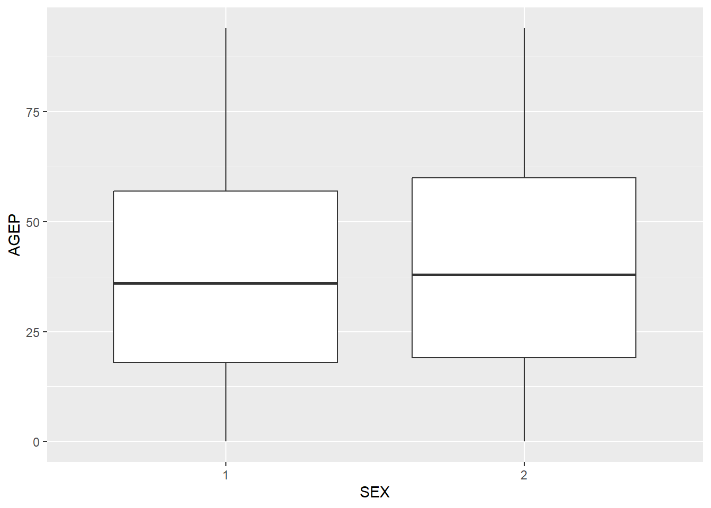

Writing a function to input an API Url and then review it in our workspace. The timeout was increased to allow for the heavier burdens that come with loading the large datasets with the later functions on this page.
Writing a function to take in the output of returned by GET() and create a tibble from it, assigning column names relevant to the data of interest.
Writing a function to query the Census API and also allow several variables to be specified within.
Writing a function that allows a user to specify all the parameters above as well as multiple years through looping the single year function above.
Summary Functions/Plots
Creating the census summary function that will produce means and standard deviations for numeric variables as well as counts for categorical variables.
Testing the summary function on a variable returned from the census API function.
Creating a generic plot function to visualize data in census tibbles.
Data Processing
The purpose of all of the code that is included in this narrative section is to highlight examples of and to utilize functions created in the Function Code.qmd file of this project to both query the US Census API, as well as output the information contained within into a convenient tibble format, while allowing the user to specify several endpoints of interest within the requested region/geographical subset. We start by importing all of the necessary packages for these functions, then creating a function that takes any general URL (In this example the URL for the 2022 Census Microdata API from Census.gov) and then outputting the result of the GET() function as our URL_id object. This function will be utilized within future functions to quickly transform the URL that has been built to the user’s specifications. After looking at its structure we can see that the raw data is in the content element.
List of 10
$ url : chr "https://api.census.gov/data/2022/acs/acs1/pums?get=SEX,PWGTP,MAR&SCHL=24"
$ status_code: int 200
$ headers :List of 11
..- attr(*, "class")= chr [1:2] "insensitive" "list"
$ all_headers:List of 1
$ cookies :'data.frame': 1 obs. of 7 variables:
$ content : raw [1:937508] 5b 5b 22 53 ...
$ date : POSIXct[1:1], format: "2025-10-01 21:08:31"
$ times : Named num [1:6] 0 0 0 0.000116 0.229084 ...
..- attr(*, "names")= chr [1:6] "redirect" "namelookup" "connect" "pretransfer" ...
$ request :List of 7
..- attr(*, "class")= chr "request"
$ handle :Class 'curl_handle' <externalptr>
- attr(*, "class")= chr "response"
Next, we take the output of the GET() function (same output as function above) and turn it into a tibble by creating and using a helper function. This function both creates a tibble as well as assigns names that correspond to the requested data. This function was also used within future functions to quickly return the data in the tibble format, from which various edits on the data type in each column can be performed.
The census() function will build a URL based on variables specified within the function and then query the API and output the requested data as a neat tibble with appropriate data types. The following example highlights the data type coercion built into this function. For example, the time column JWAP has many NA values of JWAP because the JWAP variable (time of arrival for work) value in the API is a number code, in which 0 corresponds to either unemployed individuals or someone who is working from home, so a time of arrival for work is not applicable in this case. To help prevent excess burden on loading data, a geographical subset was added and assigned to state 20, which is the census code for the state of Kansas.
census(num_var =c("AGEP", "JWAP"))
# A tibble: 29,940 × 5
AGEP JWAP PWGTP SEX state
<dbl> <dttm> <dbl> <chr> <chr>
1 17 2025-10-01 06:47:00 3 2 20
2 17 NA 12 1 20
3 21 NA 73 2 20
4 22 2025-10-01 05:37:00 44 1 20
5 67 NA 58 2 20
6 75 NA 9 1 20
7 19 NA 53 1 20
8 18 NA 3 1 20
9 64 NA 133 1 20
10 19 NA 102 2 20
# ℹ 29,930 more rows
If we want to look at a range of years, the census_year_range function calls the census function once for each year of interest, then merges these tibbles into one with a year variable. Every year within the range of valid years for the census function applies, except 2020 as there is no census API for that year. In this example we chose the years 2022, which is the default year call in census, plus the year 2021. The resulting tibble is considerably larger (58,897 rows vs 28,957 rows) than the previous example of the use of the census function due to the inclusion of two years of data.
The purpose of this section is show how the summary function and plot function defined in the Function Code.qmd file can be used to generate weighted summaries as well as a generic boxplot from the census() tibble created from the API above. We are able to grab data from the census api, run weighted summaries (means and standard deviations) using PWGTP, and from that we are able to make a simple weighted boxplot.The focus will start off with talking about the code whilst the end will discuss what we discovered when looking at the AGEP (age) and SEX(1: Male, 2: Female) from Kansas’ census data in the year 2022.
We are going to use the created summary function to summarize all the numeric columns except for PWGTP to get a named list. It is a numeric table of weighted means/standard deviations (excluding PWGTP) and a categorical table of the weighted counts. By default it summarizes are the numeric columns in the tibble but we can select specific columns when we want to trim our focus.
#Numeric (except for PWGTP)output <-summary.census(census_data)head(output$numeric)
For visual representation, we use a created plot function which will always produce a boxplot. The variables are passed as strings using named arguments. The plot function below uses SEX as the categorical variable and AGEP as the numeric variable.
plot(census_data, "SEX", "AGEP")

The summaries and plots above investigated census data from the state of Kansas (code 20) in the year 2022 with the variables of interest being AGEP (age) and SEX (1: Male, 2: Female). The boxplot tells us that the age distributions for males and females are pretty similar. However there do appear to be two slight differences. The medians are pretty close together with Females having a slightly higher median than Males. That along with the fact that the upper quartile for females is slightly larger than its own lower quartile indicates that there are more older women in the population in Kansas (slight skew in population) which does not appear present for the men.